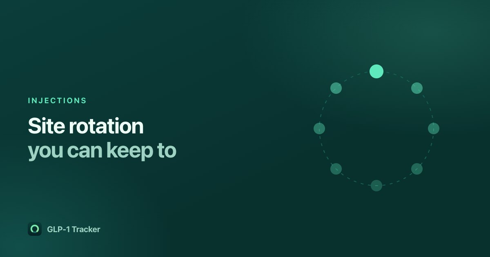

Injection site rotation: a system you will actually keep to

Every set of instructions that comes with a subcutaneous injection pen says to rotate your injection site. Almost nobody is told how to keep track, and after a few months of weekly shots most people are relying on a vague memory of "the left one, I think".
Why the guidance exists
Repeatedly injecting the same spot is associated with local skin and tissue changes, which is why rotation appears in the patient instructions for these products. The manufacturer's instructions for use that came with your pen or vial are the authority here — read them, and ask your prescriber or pharmacist if anything is unclear. Nothing on this page replaces them.
What we can be useful about is the bookkeeping.
The sites, and why a list beats a habit
The usual subcutaneous sites for these medications are the abdomen, the front of the thigh and the back of the upper arm, avoiding the area immediately around the navel and any skin that is bruised, tender, scarred or hardened. Within a region there is a lot of usable area, which is exactly why people drift back to the same square inch: there is no landmark, so the hand goes where it went last time.
A written record fixes this in a way that intention does not. Two approaches work:
- A fixed cycle. Decide an order — left abdomen, right abdomen, left thigh, right thigh, and so on — and follow it. Simple, and it fails the first time you miss a week and lose your place.
- Least-recently-used. Record where each shot went, and next time pick whichever site you have not used for longest. Self-correcting, because a missed week cannot put you out of sequence.
The second is what our app does. When you log a shot, it suggests the site you have gone longest without using, based on the ones you have actually recorded. It is a convenience, not a medical instruction — you can tap a different one, and nothing in the app will argue with you.
What to record
The useful minimum is the date and the site. If you also record how the site felt afterwards, you have something concrete to show a clinician if you ever need to, which is easier than reconstructing three months from memory. Injection site reactions are one of the symptoms our app lets you log against your dose history, for exactly that reason.
A note on what a tracker cannot do
An app can tell you where you last injected. It cannot look at your skin. If a site is painful, hard, persistently red, or changing, that is a conversation with your prescriber or pharmacist, and it is not one an app should be having with you. Ours deliberately does not try — when you log a severe symptom it says plainly that it cannot assess symptoms and points you at your clinician.
Rotation in the app
Logging a shot takes one screen: the amount, the date and time, and the site, with the least-recently-used one already suggested. It is free, there is no account, and your history stays on your phone.
Get GLP-1 Tracker on the App Store
Common questions
Where can GLP-1 medications be injected?
The usual subcutaneous sites are the abdomen, the front of the thigh and the back of the upper arm, avoiding the area immediately around the navel and any skin that is bruised, tender, scarred or hardened. Follow the instructions for use that came with your pen or vial, and ask your prescriber or pharmacist if anything is unclear.
How do I keep track of injection site rotation?
Record the date and site of every shot, then choose whichever site you have gone longest without using. That least-recently-used approach is self-correcting, unlike a fixed cycle, which breaks the first time you miss a week.
Does GLP-1 Tracker suggest an injection site?
Yes. When you log a shot it suggests the site you have gone longest without using, based on the shots you have recorded. It is a convenience rather than a medical instruction, and you can pick any site you like.